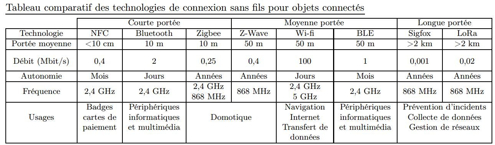

Chapitre V - Informatique embarquée
I - b) Différents matériels
Le fichier suivant est une poursuite du cours : fichier
À faire le mardi 24 mars :
Sur la dernière page, on vous demande de compléter un tableau. Le faire sur un traitement de texte (privilégiez LibreOffice ou OpenOffice à Word) - vous n'êtes pas obligés de présenter sous la forme d'un tableau, c'est à vous de voir.
Dans cette classification, le smartphone appartient finalement à deux colonnes différentes. Expliquer quelle(s) utilisation(s) permet(tent) de le classer dans chacune de ces colonnes (se servir des définitions).
Un peu d'histoire
Voici la suite du cours (c'est une partie que je présente dans chaque chapitre) : II - Un peu d'histoire
L'Internet des objets
Voici la suite du cours : internet des objets
À faire le mardi 24 mars :
Répondre sur un fichier traitement de texte aux questions suivantes : questionnaire
Les réponses pourront s'appuyer (et c'est même conseillé) sur les deux documents suivants :
Pour définir la domotique, on peut regarder cette vidéo.

analyse de l'application Waze
À faire pour le mardi 31 mars :
Waze est une application de guidage GPS. Regarder la vidéo et répondre aux questions du document en lien.
Pour répondre, le faire de nouveau sur un traitement de texte (ne recopier que les réponses qui vous semblent bonnes pour les questions 1 et 2).
Vous pouvez insérer l'image jointe dans votre fichier en ajoutant des zones de texte pour compléter par les chiffres adéquats. Pour ceux qui ne savent pas faire, voici une petite vidéo explicative.
{kind=link}